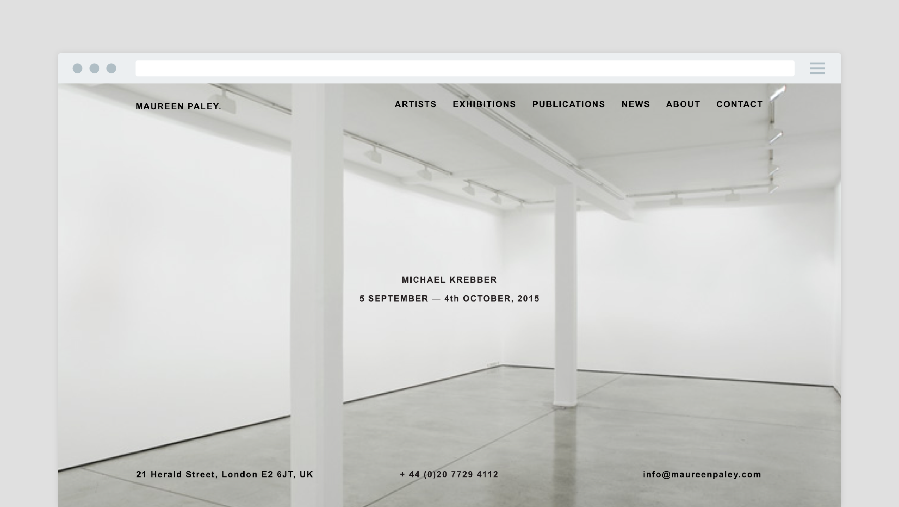
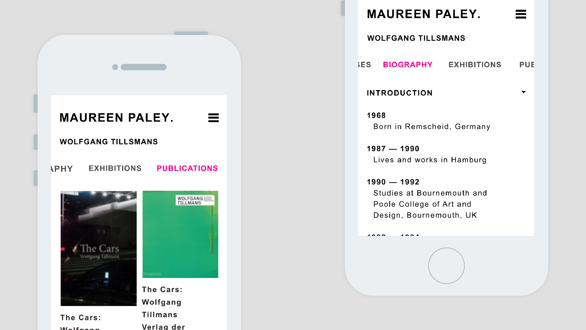

Maureen Paley
Creation of a minimal new site for the East London gallery, with several complex bits of UX and UI to make sense of an extensive catalogue of artists and exhibitions.
Visit Maureen Paley




Maureen Paley
Creation of a minimal new site for the East London gallery, with several complex bits of UX and UI to make sense of an extensive catalogue of artists and exhibitions.
Visit Maureen Paley
Fitzdares
Mobile App for exclusive bookmaker Fitzdares, translating their existing personalised service into the digital world. It was important to act as a brand guardian on this project, making sure the brand and app stayed true to the original look and feel.
Visit Fitzdares
Doteveryone
Creation of identity and branding, Doteveryone is a new national organisation by Martha Lane Fox with the purpose of advancing understanding of the internet and technology within the UK.
Visit Doteveryone
54bank
Internal project at With where I designed and built a tool for us to keep track of money we leant people while buying lunch and various other expenses. This is the MVP.
Visit 54bank